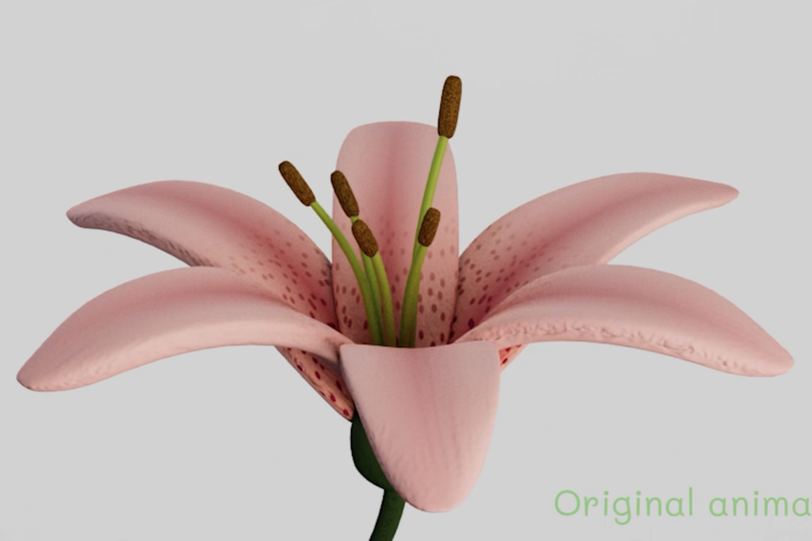
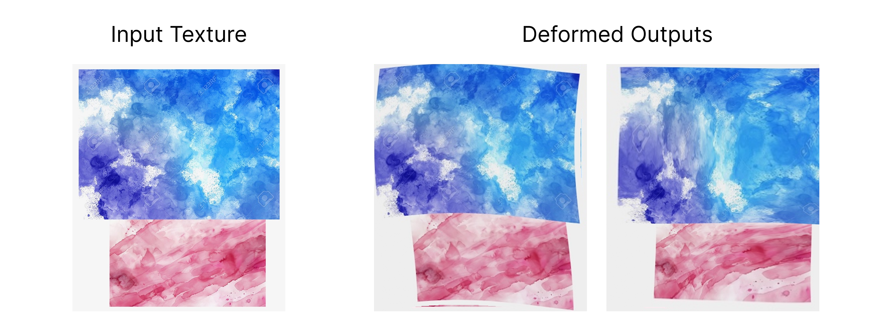

Making Computer Animations Look Hand-Drawn
For our final project in Advanced Computer Graphics, my three classmates and I implemented Color Me Noisy: Example-based Rendering of Hand-colored Animations with Temporal Noise Control, a paper by J. Fišer, M. Lukáč, and O. Jamriška of CTU Prague, M. Čadík of Brno University of Technology, Y. Gingold of George Mason University, P. Asente of Adobe Research, and D. Sýkora of CTU Prague.
The paper proposes a method for rendering 3D animations with a 2D hand-colored feel by mimicking the texture of a hand-painted reference image, frame by frame, while keeping the result temporally consistent.
Read the paper →
The original 3D animation, before the hand-colored effect is applied
At a high level, our pipeline mirrors the paper's: given a target animation frame and a reference texture, we synthesize a noisy, hand-rendered-looking version by progressively refining from coarse to fine image scales. This reduces temporal flicker between frames while preserving the hand-painted style.

Left: the original reference texture. Center & right: two random pre-deformations used to vary the hand-painted look across frames
I implemented the pre-deformation algorithm, which randomly warps the input reference texture using a vector field. This keeps the texture from matching exactly across frames, which is what gives the final animation its hand-drawn feel instead of a static, pasted-on look.
The deformed texture is then downsampled and matched against the input animation, frame by frame, feeding into the patch match step that generates the final stylized result.
I thought this project was a great opportunity to learn more about post-processing techniques in computer graphics and how graphics and animation can be combined. I loved running this algorithm on my teammates' animations and seeing the results come out — I'd love to make some of my own animations in the future and run this pipeline on them as well.
Final stylized output — a hand-colored render of the flower animation